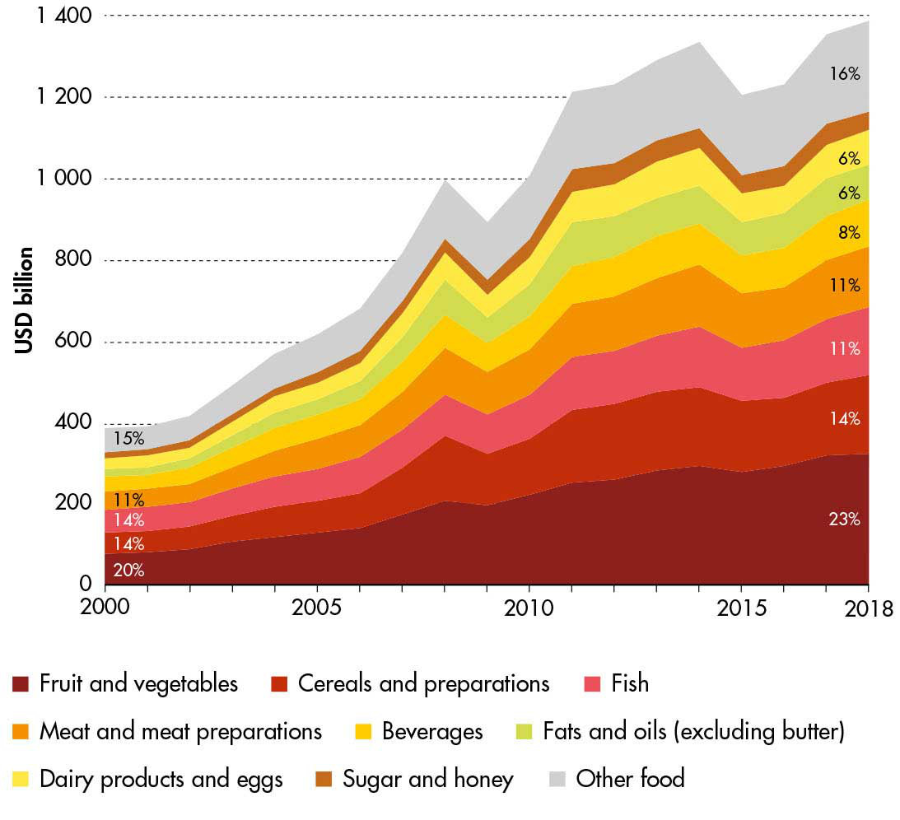
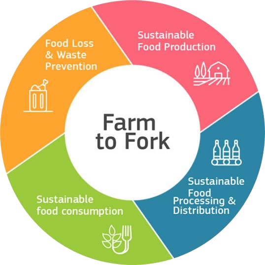
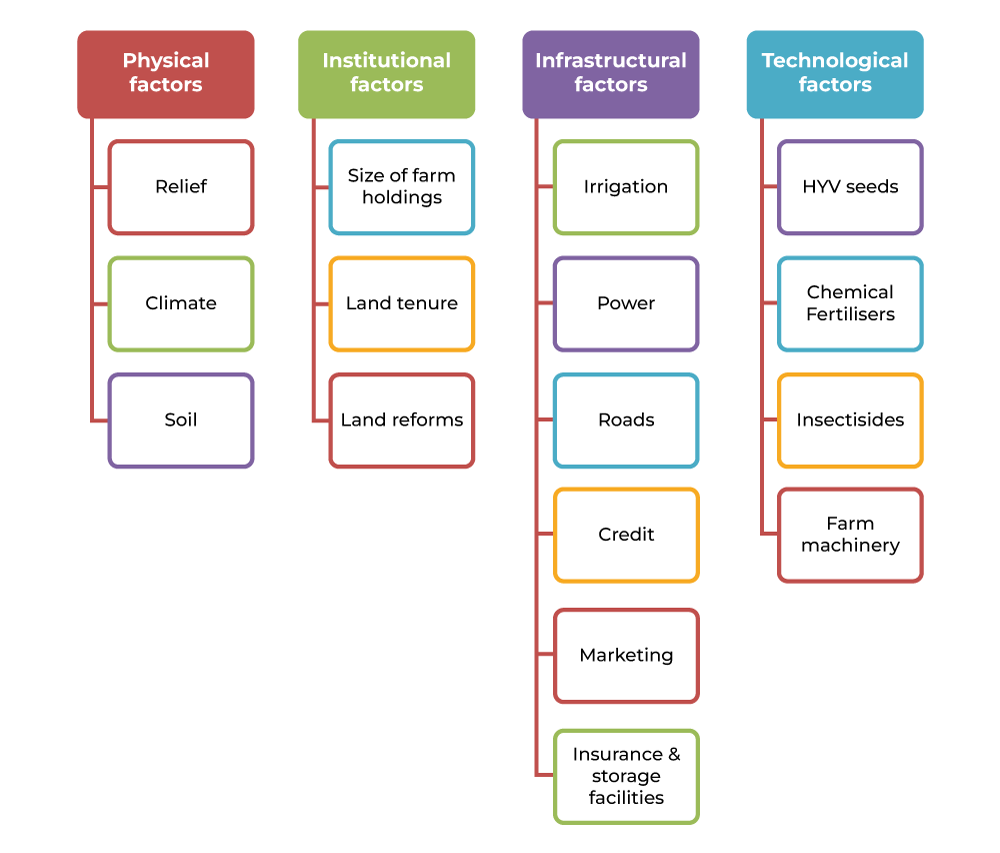

INTRODUCTION
Food production represents the intricate and multifaceted process of
supplying the world's population with the diverse array of food
necessary to meet their dietary requirements and sustain their health
and wellbeing. This intricate journey begins in the fertile fields of
agriculture and the waters of aquaculture, where crops and livestock
are nurtured and raised. Agriculture employs advanced techniques, from
mechanized farming to the application of fertilizers and pesticides,
to optimize yields and ensure crop health. In the case of livestock,
animal husbandry practices are employed to raise and care for animals
destined for food production.
The next stage, harvesting, involves the collection of mature crops,
and the methods used vary according to the specific type of produce.
Once harvested, post-harvest handling activities, such as cleaning,
sorting, and packaging, are meticulously performed to preserve the
quality and safety of the produce, preventing damage and
contamination.
Food production then advances to the processing phase, where the raw
agricultural and livestock products undergo transformation to make
them suitable for consumption. This transformation may include
washing, peeling, slicing, cooking, freezing, and canning. Common
examples of processed foods include canned vegetables, frozen meals,
and a variety of snack items.
The food production sector also grapples with the critical issue of
sustainability and its environmental impact. As awareness of
environmental concerns grows, efforts are being made to adopt more
sustainable practices, minimize waste, and reduce the carbon footprint
of food production. This shift towards sustainability aims to balance
the need for ample and nutritious food supplies with the imperative of
protecting the planet's ecosystems and resources. In summary, food
production is a vast and intricate system that plays a central role in
nourishing humanity while facing the imperative of environmental
responsibility.
FOOD PRODUCTION AND ENVIRONMENT

The intersection of food production and the environment is a complex
and multifaceted relationship with far-reaching consequences. Food
production exerts a significant impact on the natural world, and the
environment, in turn, influences the methods and outcomes of food
production. Food production, driven by the need to feed a growing
global population, relies on extensive land use, water resources, and
energy inputs. Large-scale monoculture agriculture can result in
deforestation, habitat loss, and the conversion of diverse ecosystems
into agricultural landscapes. Furthermore, the use of chemical
fertilizers and pesticides can contribute to soil degradation and
water pollution, posing threats to both terrestrial and aquatic
ecosystems.
One of the most significant environmental impacts of food production
is the emission of greenhouse gases, primarily carbon dioxide,
methane, and nitrous oxide, which are produced by livestock, rice
cultivation, and the use of synthetic fertilizers. These emissions
contribute to climate change and its associated consequences, such as
extreme weather events, altered growing seasons, and sea-level rise.
However, it is crucial to recognize that food production isn't solely
a driver of environmental degradation; it also has the potential to be
a solution. Sustainable and regenerative farming practices, such as
organic farming, agroforestry, and permaculture, promote biodiversity,
improve soil health, and sequester carbon. These practices contribute
to ecosystem resilience, reduce the need for synthetic inputs, and
mitigate some of the negative environmental impacts associated with
conventional agriculture.
In summary, the connection between food production and the environment
is deeply intricate. While it poses environmental challenges through
resource consumption, emissions, and habitat alteration, it also
offers opportunities to implement sustainable practices that can
mitigate these impacts and contribute to ecosystem restoration.
Recognizing and addressing these challenges is essential in the quest
for a more sustainable and environmentally responsible global food
system
FACTORS AFFECTING FOOD PRODUCITON
he production of food is a multifaceted process subject to a myriad of
factors that operate in concert to shape the outcomes of this
essential industry. Natural factors exert a fundamental influence:
climate conditions, precipitation patterns, and temperature regimes
dictate which crops can be cultivated and the success of livestock
rearing. Soil quality and nutrient availability directly affect crop
growth and nutritional content. Access to adequate water resources is
another critical natural factor that influences food production, with
arid regions and water scarcity posing unique challenges.
Economic factors also play a pivotal role. Market demands, consumer
preferences, and food prices guide the decisions of producers,
impacting the choice of crops or livestock to raise. Additionally,
economic considerations determine the allocation of resources, from
land and labor to capital investments in technology and
infrastructure. Access to financial resources and credit also
influences a farmer's ability to invest in modern agricultural
techniques.
Technological advancements are a driving force in modern food
production. Mechanization, the use of genetically modified organisms
(GMOs), precision agriculture, and innovative irrigation systems have
the potential to enhance production efficiency. However, they can also
raise concerns related to environmental impacts, such as excessive
resource consumption and the potential loss of biodiversity.
Social and political factors are central to food production. Land
tenure systems, agricultural policies, and resource access shape the
decisions of producers, and land reforms or property rights
significantly affect who gets to farm and what they choose to grow.
Additionally, social factors like labor availability and demographics,
including urbanization and population growth, influence the
agricultural labor force.
Global issues further complicate the food production landscape.
Environmental challenges such as soil erosion, deforestation, and
water pollution can undermine long-term food security. Moreover,
global trade and geopolitical events can affect the flow of
agricultural products, influencing prices and accessibility for
consumers.
In summary, food production is a multifaceted system where a multitude
of natural, economic, technological, social, and global factors
interact and collectively determine the quantity, quality, and
sustainability of food production. Understanding and addressing these
factors is essential for the development of a resilient and
sustainable global food system that can meet the nutritional needs of
a growing world population while minimizing negative environmental and
social impacts.


SUSTAINABLE FOOD PRODUCTION
Sustainable food represents a comprehensive approach to the
production, distribution, and consumption of food that goes beyond the
mere act of nourishment. It is a philosophy and a set of practices
that seeks to harmonize the diverse elements of our global food system
to achieve multiple positive outcomes for the environment, society,
and individual well-being. At the heart of sustainable food lies a
deep commitment to environmental stewardship. This approach recognizes
that the Earth's resources are finite, and the ecosystems that support
food production must be conserved and protected. As such, sustainable
food production is characterized by practices that minimize negative
environmental impacts. This includes the reduction of greenhouse gas
emissions, the preservation of biodiversity, and the protection of
natural resources such as clean water and fertile soils. Organic
farming, agroecological practices, and reduced pesticide use are all
facets of sustainable food production that work in harmony with the
environment, rather than depleting it.
Food waste is another key issue addressed by sustainable food systems.
The wasteful disposal of food contributes to resource depletion and
environmental degradation. Sustainable food encourages reduced waste
through strategies such as composting, recycling, and responsible
consumer choices.
Ultimately, the goal of sustainable food is to ensure equitable access
to nutritious and safe food for all. This means addressing issues of
food insecurity and food deserts, where individuals and communities
lack access to affordable, healthy food. Sustainable food systems aim
to create a more just and equitable food system where everyone has the
opportunity to access the nourishment they need. In summary,
sustainable food is a multifaceted approach that transcends the
traditional boundaries of food production, focusing on the well-being
of the planet, the livelihoods of those who produce our food, and the
health and nutrition of those who consume it. It seeks to balance
ecological responsibility with ethical treatment of labor and animals,
support local economies, reduce waste, and foster equitable access to
nourishing food. Sustainable food systems offer a pathway to a
healthier, more just, and environmentally responsible world.